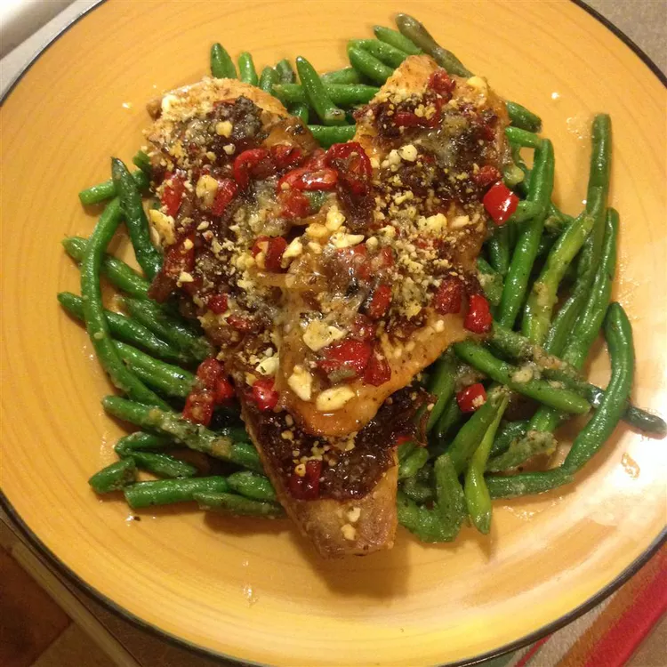

Balsamic Baked Tilapia Recipe

Balsamic baked tilapia with onions, bell peppers, and blue cheese on mixed greens.
Ingredients
- 1 tablespoon olive oil (for sautéing)
- 1 yellow onion, halved and sliced
- 1 red bell pepper, chopped
- 2 tablespoons balsamic vinegar
- Salt and ground black pepper, to taste
- 2 (8-ounce) tilapia fillets
- 2 teaspoons olive oil (for brushing fillets)
- 1 cup crumbled blue cheese
- 4 cups mixed salad greens
How to Cook
- Preheat Oven: Preheat your oven to 350°F (175°C).
- Sauté Onion and Bell Pepper: In a large skillet over medium-high heat, warm 1 tablespoon of olive oil. Add the sliced onion and chopped bell pepper. Cook for about 10 minutes, until the onion is tender and golden and the bell pepper is slightly soft. Stir in the balsamic vinegar and season with salt and black pepper to taste. Remove from heat.
- Prepare the Tilapia: Rub each tilapia fillet with 2 teaspoons of olive oil, then season with salt and black pepper. Place the fillets in a small baking dish, and top with the balsamic onion-bell pepper mixture. Sprinkle the crumbled blue cheese evenly over the fillets.
- Bake: Bake in the preheated oven for about 15-20 minutes, or until the tilapia flakes easily with a fork.
- Serve: Serve the baked tilapia on a bed of mixed salad greens, letting the juices add flavor to the greens.